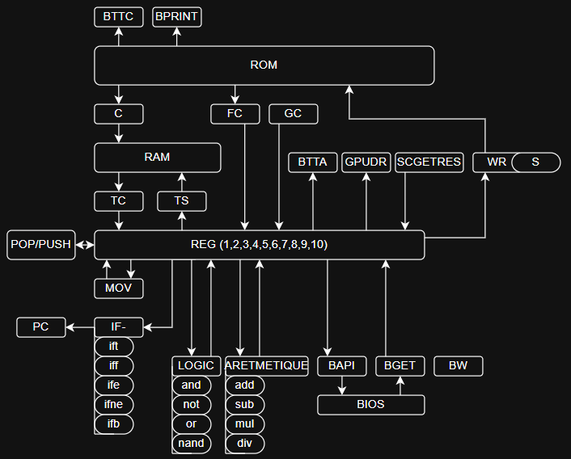

Voici mon premier projet pour ce site.
Le but de ce projet est de créer un émulateur bas niveau qui exécute un langage bas niveau simple et polyvalent.
Assez simple pour que il soit disponible partout. Sur lua, python , java , JavaScript, et bien plus encore et qui exécutera le même langage. Ressemblant a de l'asembly custom.
Mais entièrement exécuter en binaire.
L'idée mes venu il y a longtemps. Quand je voulais refaire des ordinateurs sur des jeux. J'ai vu que ce qui m'intéressait le plus était surtout le code sur ces ordinateurs.
Le problème c'est que ces ordinateurs sont volumineux. Difficile a debug. Et prends beaucoup de ressources.
Les émulateur sont une bonne idée.
Et j'ai eu l'idée de créer mon os sur mon emulateur.
Et depuis des mois. Le monde accélère.
La surveillance de masse et les loi sur la vérification d'âge rend la confidentialité dur. Avec windows il est difficile de savoir comment nos données sont utilisées. Et la taille aussi. 7,5g c'est pas logique. Linux fait bien mieux. J'adore linux mais mon but est juste d'apprendre et de faire des petits projets. Pas de concurrencer un kernel énorme.
J'ai débuté le projet en ~2024.
Pour l'instant ont est encore loin du résultat final mais ça avance.
J'ai fait une liste d'instruction pour mon émulateur v2.
Car j'en avais fait un avant mais il utilisait directement la ram pour faire les opérations. C'était pas très pratique.
Donc la v2 utilise les registres.
La liste ce trouve ici
here
il y a aussi les explication des instruction ici
here
J'ai aussi fait un graphique qui représente les interactions entre les instructions
